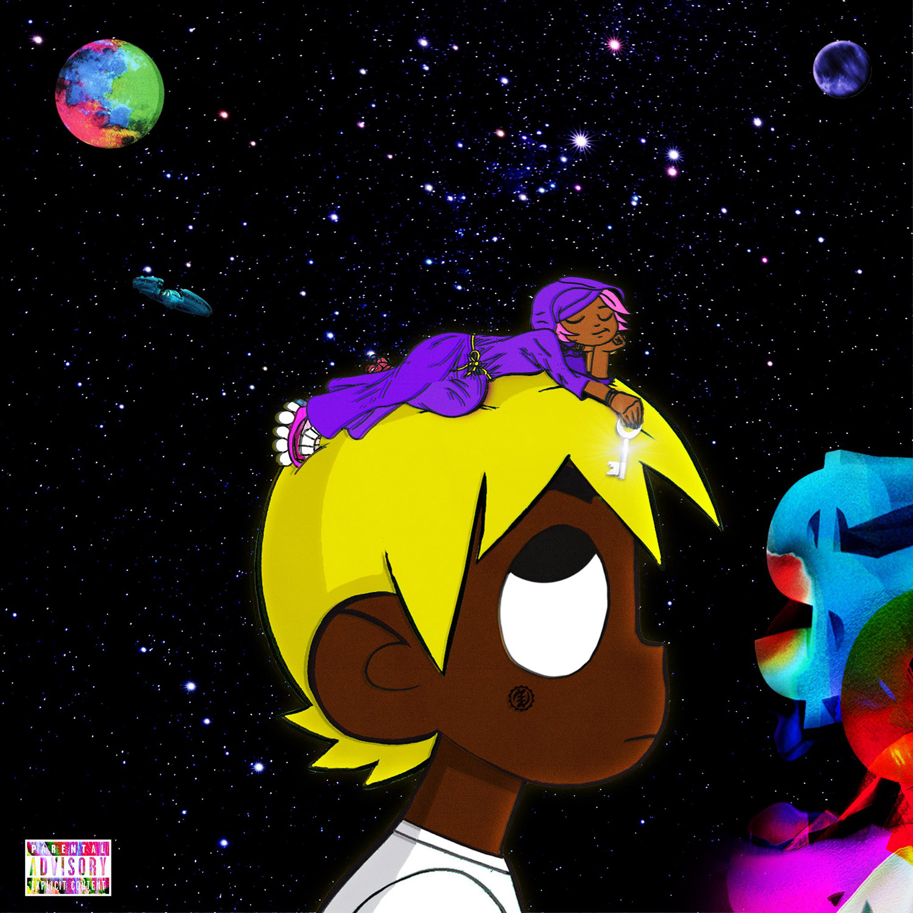

It explains how if you pick the right friends they can lead you to a good way instead of bad, all you have to do is pick right people.
He explains how he gets money. He also flexes and shows his money.
This song talk about him apologizing to somebody. More specific he's apologizing to his girlfriend.
